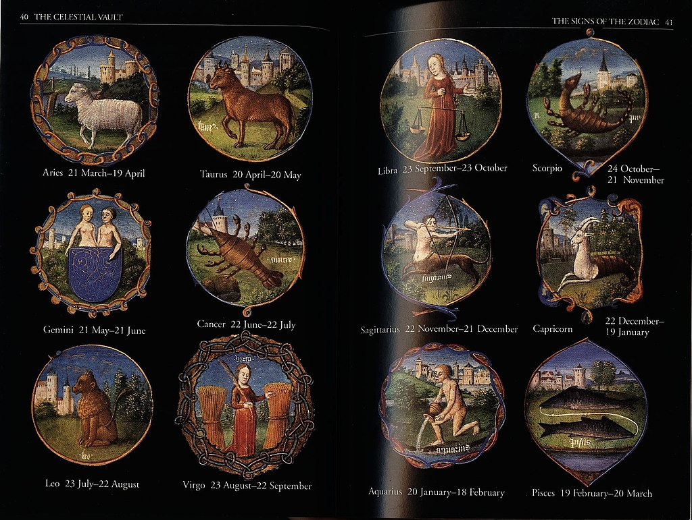

Nguồn gốc:Cung hoàng đạo là một khái niệm trong chiêm tinh học, dựa trên vị trí của các chòm sao trên bầu trời. Theo hệ thống này, vũ trụ được chia thành 12 phần bằng nhau, mỗi phần tương ứng với một cung hoàng đạo, có tên gọi và biểu tượng riêng. Tháng sinh 12 cung hoàng đạo được xác định bởi vị trí của Mặt Trời khi nó di chuyển qua các chòm sao trong năm. Nguồn gốc của 12 cung hoàng đạo có thể truyền lại từ thời kỳ cổ đại, khi con người quan sát thiên văn để dự báo thời tiết, nông nghiệp và sự kiện lịch sử. Các nền văn minh khác nhau đã phát triển các hệ thống cung hoàng đạo riêng, nhưng có nhiều điểm chung giữa chúng. Hệ thống cung hoàng đạo phổ biến nhất hiện nay là hệ thống Tây phương, được ảnh hưởng bởi các nền văn minh Babylon, Hy Lạp và La Mã. Trong hệ thống Tây phương, theo tháng sinh 12 cung hoàng đạo là: Bạch Dương, Kim Ngưu, Song Tử, Cự Giải, Sư Tử, Xử Nữ, Thiên Bình, Bọ Cạp, Nhân Mã, Ma Kết, Bảo Bình và Song Ngư. Tháng sinh 12 cung hoàng đạo có ảnh hưởng đến tính cách và số phận của họ. Ý nghĩa:12 cung hoàng đạo có ảnh hưởng đến tính cách và số phận của con người theo quan niệm của chiêm tinh học. Theo đó, mỗi người sinh ra đều có một cung hoàng đạo riêng biệt dựa trên ngày và tháng sinh của họ. Tháng sinh 12 cung hoàng đạo sẽ phản ánh những đặc điểm nổi bật, ưu điểm và nhược điểm của họ trong cuộc sống. Ngoài ra, 12 cung hoàng đạo cũng giúp chúng ta hiểu rõ hơn về các mối quan hệ giữa các con người. Chẳng hạn, bạn có thể biết được ai là người phù hợp với bạn trong tình yêu, ai là bạn bè tốt, ai là đối thủ cạnh tranh,… Bằng cách so sánh và phân tích các cung hoàng đạo khác nhau, bạn có thể tìm ra những điểm chung và khác biệt giữa các cá nhân. |